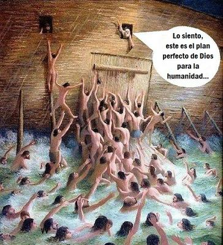

Como librepensadores resulta inevitable cuestionar una de las frases más repetidas en el discurso cristiano: «Es que Dios tiene un plan perfecto». Una expresión que suele usarse como consuelo ante la desgracia, como anestesia frente a lo absurdo, y como cierre automático de cualquier duda: si algo sale mal, es porque «así estaba en el plan». Sin embargo, cuando se contrasta esa idea con el propio texto bíblico y con la realidad histórica y natural, simplemente se desmorona.


El problema comienza dentro de la misma teología. La Biblia presenta a «Dios» como un ser omnisciente, omnipotente y absolutamente perfecto. Sin embargo, ese mismo «Dios» se arrepiente de sus decisiones. Génesis 6:6 afirma que «le pesó a Yahvé haber hecho al hombre en la tierra», y Éxodo 32:14 dice que «se arrepintió» del castigo que había anunciado. Y el arrepentimiento implica un error previo, un cambio de opinión, una corrección de una decisión mal tomada. Pero, ¿cómo puede un ser perfecto y omnisciente, que supuestamente conoce desde la eternidad todas las consecuencias de sus actos, equivocarse y luego lamentarlo? Un «plan perfecto» no requiere rectificaciones.
A esto se suma la paradoja de la creación. El ser humano fue hecho «a imagen y semejanza de Dios» (Génesis 1:26), pero resultó defectuoso, inclinado al mal, frágil moral y biológicamente. Por tanto, o bien el diseño no era tan perfecto, o el producto salió defectuoso. Pero en ambos casos, la idea de un «plan perfecto» queda en entredicho. Si «Dios» es omnipotente y omnisciente, pudo haber creado seres libres que siempre eligieran el bien, o un mundo sin sufrimiento innecesario. Pero no lo hizo. Los cristianos dicen que lo que pasa es que tenía que respetar el «libre albedrío» de los hombres. ¿El libre albedrío? ¿Acaso «Dios» no sabe de antemano qué es lo que decidiremos? ¿Es eso libre albedrío?
Y, ojo, según Isaías 45:7, «Dios» no sólo creó la luz y la paz, sino también «las tinieblas» y «la adversidad». Por lo que el mal, el dolor y la catástrofe, no serían accidentes ajenos a su voluntad, sino partes constitutivas de la realidad que él mismo diseñó. Partes de su «plan perfecto».
Sí, aquí empieza a adquirir un tinte inquietante la noción de «plan». Un mundo en el que existen desde siempre enfermedades, hambrunas, terremotos, tsunamis, plagas, cáncer infantil, discapacidades congénitas y extinciones masivas, difícilmente puede describirse como resultado de un proyecto amoroso y perfecto. La respuesta habitual es que todo eso es consecuencia del «pecado» humano… Pero esta explicación tropieza todavía con otro problema lógico: si «Dios» sabía de antemano que el ser humano iba a «pecar», y aun así lo creó exactamente como lo hizo, entonces el «fallo» estaba incorporado desde el inicio al supuesto plan. Es decir, «el pecado» era parte del plan divino. No es un error imprevisto, sino una característica del diseño.
El relato del Diluvio expone esta contradicción con crudeza. «Dios», insatisfecho con su creación, decide destruirla casi por completo. No «repara» a los humanos, no corrige su naturaleza, no elimina selectivamente a los culpables: opta por una catástrofe global que, según el propio texto, aniquila también a niños, ancianos, enfermos y animales. Un ser omnipotente habría podido transformar los corazones, borrar las inclinaciones al mal, o incluso eliminar de forma instantánea y específica a quienes consideraba irrecuperables. Sin embargo, elige en cambio un método extremo que recuerda más a la impotencia o a la ira de un dios tribal, que a la ejecución serena de un «plan perfecto».
Y la incoherencia se agrava cuando se observa que este «Dios», que según los evangelios no perdona ciertos «pecados» (Marcos 3:29; Mateo 12:31-32), castiga conductas que, de acuerdo con su omnisciencia, sabía con absoluta certeza que los seres humanos cometerían. Crear seres con una naturaleza que los conduce al error y luego condenarlos por actuar conforme a esa naturaleza, es moralmente censurable y conceptualmente absurdo. Un plan que incluye de antemano la caída, la culpa, el castigo eterno y la destrucción masiva, difícilmente puede calificarse de «perfecto»; a lo sumo, es un guion trágico impuesto a criaturas que no pidieron existir.
Así que, como vemos, desde una perspectiva histórica y crítica, la idea del «plan divino» funciona más como una racionalización a posteriori, que como una descripción coherente de la realidad. Sirve para dar sentido al sufrimiento, para justificar la injusticia, y para desactivar la pregunta incómoda: ¿por qué un mundo creado por un ser perfecto es tan radicalmente imperfecto? Ante esa pregunta, la teología responde con fórmulas, no con explicaciones. Decir que «Es el plan de Dios», equivale a decir: «No sabemos, pero debemos aceptarlo.»
En última instancia, el concepto de un «plan perfecto» choca tanto con la experiencia del mundo, como con la lógica interna de la propia Biblia. Un «Dios» que se arrepiente, que se equivoca, que destruye lo que él mismo diseñó, que crea el bien y el mal, la paz y la calamidad, y que castiga fallas que conocía desde antes de la creación, no se ve como el arquitecto de un proyecto intachable. Más recuerda a una construcción mítica humana: un intento de explicar el caos del universo atribuyéndolo a una voluntad suprema, aunque esa voluntad resulte tan contradictoria y falible, como la de los hombres que la imaginaron.
[Godless Freeman]
Comentarios
Comments powered by Disqus